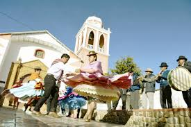
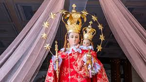
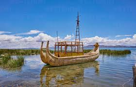

Huarina, aunque menos conocida que los otros lugares , tiene una historia rica en tradiciones aymaras. Ubicada cerca del Lago Titicaca, Huarina ha sido habitada por comunidades indígenas desde tiempos antiguos. Su economía ha estado tradicionalmente ligada a la agricultura y la pesca, aprovechando los recursos del lago. Durante la colonia, la influencia española se hizo presente, pero muchas de las tradiciones aymaras se han mantenido. En la actualidad, Huarina sigue siendo un reflejo de la cultura aymara, con prácticas y rituales que celebran su conexión con la tierra y el lago.
Huarina es una pequeña localidad boliviana situada a orillas del Lago Titicaca, en el departamento de La Paz. Este pueblo es conocido por su fuerte identidad aymara, su rica historia y su conexión con el lago, que influye tanto en la vida cotidiana como en las prácticas culturales y espirituales de sus habitantes.
LLa cultura de Huarina refleja una fusión de creencias aymaras ancestrales y la religión católica. Festividades como la de San Andrés, el santo patrono de Huarina, combinan la devoción cristiana con rituales indígenas. Durante estas celebraciones, los pobladores realizan misas, procesiones y también ofrendas a la Pachamama, agradeciendo las cosechas y la pesca. Estas prácticas reflejan la conexión entre los habitantes y la naturaleza, además de su respeto por la tradición ancestral.

La música y la danza son expresiones importantes en Huarina, especialmente durante las festividades y ceremonias religiosas. Danzas tradicionales como la morenada, kullawada y llamerada son comunes y están acompañadas por instrumentos andinos como la zampoña, el charango y los tambores. Estas danzas y ritmos no solo son una forma de entretenimiento, sino también una manera de preservar y transmitir la identidad cultural.

La vestimenta tradicional es otra característica de la cultura de Huarina. Las mujeres visten polleras, mantas coloridas y sombreros típicos, mientras que los hombres usan ponchos y chullos (gorros tejidos). Esta ropa se utiliza tanto en la vida diaria como en ocasiones especiales, y es un símbolo de orgullo cultural para los pobladores.

El aymara es el idioma predominante en Huarina y es un pilar de la identidad cultural de sus habitantes. Además de usarse en la vida cotidiana, el idioma juega un papel importante en la preservación de las costumbres y tradiciones, permitiendo que el conocimiento y las historias se transmitan.
El Lago Titicaca tiene un significado especial para los habitantes de Huarina, quienes lo consideran sagrado. Sus aguas son fundamentales para la pesca y la agricultura, actividades esenciales para la economía local. Además, el lago es visto como un símbolo de fertilidad y prosperidad, y es común realizar ofrendas en sus orillas para pedir protección y abundancia. Este respeto por el lago refleja la profunda conexión que los pobladores de Huarina tienen con la naturaleza y el entorno.
La cultura de Huarina es una mezcla de espiritualidad ancestral y devoción religiosa, que da vida a las costumbres y tradiciones de esta comunidad. La conexión con el Lago Titicaca, la lengua aymara, la música, las danzas y la vestimenta típica hacen de Huarina un lugar especial, donde la identidad cultural y el respeto por la naturaleza se mantienen fuertes. Para quienes visitan Huarina, es una oportunidad única de conocer de cerca la esencia del altiplano boliviano y de experimentar una cultura viva y auténtica.